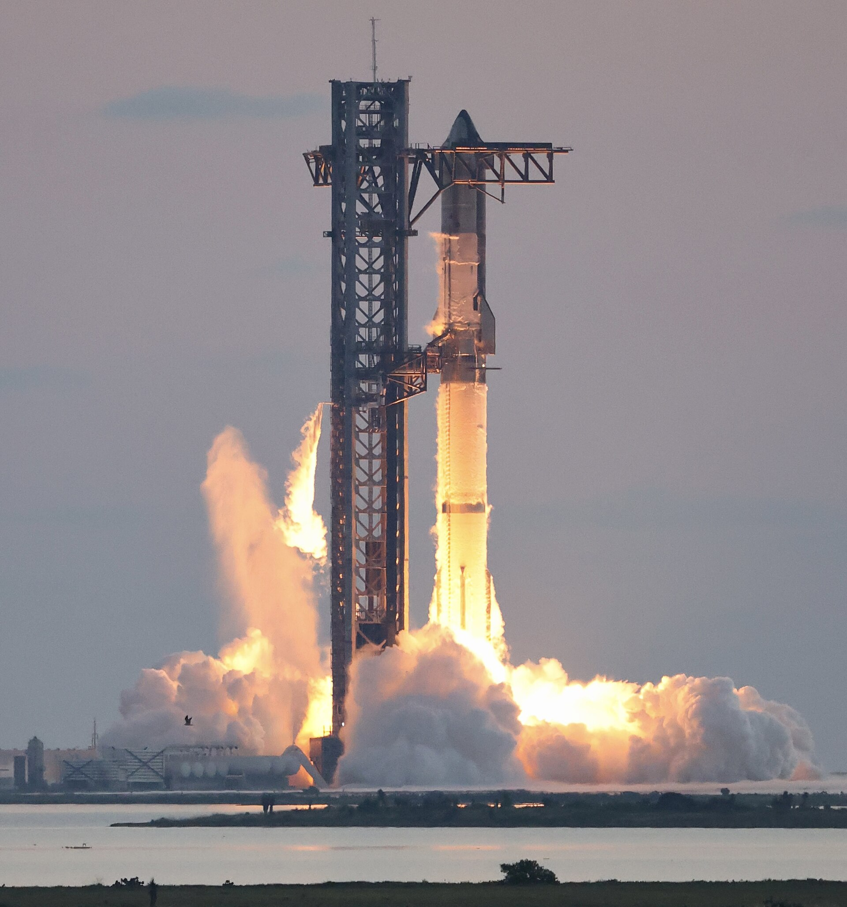
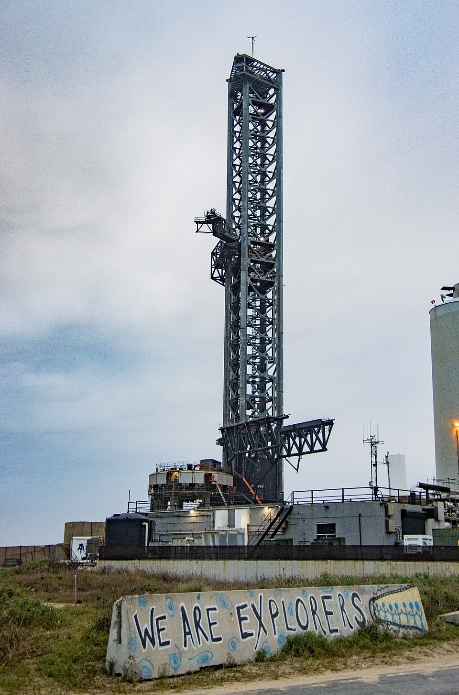

Dimostrato
Produzione, prove e lanci integrati dal sito.
Infrastrutture · Scheda tecnica 23
Il polo texano in cui produzione, prove e lanci Starship si incontrano. Una mappa datata deve distinguere edifici industriali, aree di prova e rampe.
Stato al 10 ottobre 2026: Operativo
Leggi i dati Controlla le fonti
Riferimento: documenti citati a fondo pagina, letti con le rispettive date. Stato editoriale al 10 ottobre 2026.
Il sito collega una filiera industriale con operazioni di volo. Costruire un veicolo, provarlo e lanciarlo sono funzioni distinte, anche quando si trovano nello stesso territorio. Le torri partecipano alle operazioni e alla cattura.
Boca Chica nacque con un progetto diverso e divenne il centro Starship. Edifici, piazzali e rampe sono cambiati durante lo sviluppo: una fotografia storica non ricostruisce la situazione attuale.
Viabilità, autorizzazioni, ambiente e sicurezza influenzano le attività. Il numero delle rampe non è una misura della cadenza ottenibile, che dipende anche da produzione, prove e disponibilità dei veicoli.
Produzione, prove e lanci integrati dal sito.
Espansione industriale e nuove infrastrutture nei programmi pubblicati.
Cadenza stabile e compatibilità di tutte le attività con i vincoli del territorio.

Consultazione editoriale: 10 ottobre 2026. Le date dei singoli documenti sono distinte dalla data della scheda.